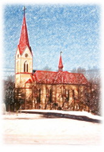

Varhany v kostele sv. Josefa v Janovicích
|  | Úvod, dispozice |
|---|---|
| Princip funkce a popis jednotlivých částí (obecně) | |
| Podrobný popis janovických varhan | |
| Oprava janovických varhan v letech 1998 až 2000 | |
| Použitá literatura | |
| Zvuk janovických varhan | |
Poznámka: Tato stránka je součástí osobních stránek Petra Bernata, © 2000 - 2004 Ing. Petr Bernat.